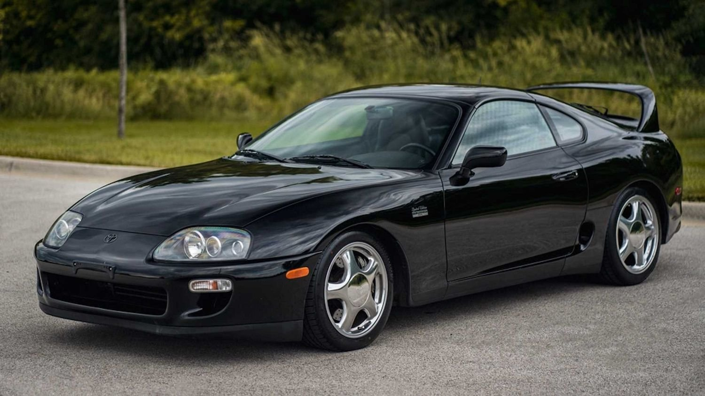
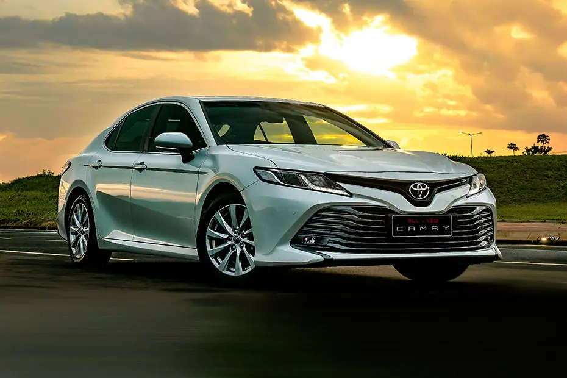
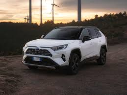

Ավտոմեքենաներ
Toyota Supra

Supra-ի դիզայնն ընդունվել է Toyota Celica- ից , բայց կորպուսն ավելի երկար և լայն էր [6] ։ 1986 թվականի կեսերից սկսած՝ Supra-ն բաժանվեց Celica-ից՝ դառնալով ինքնուրույն մոդել: Այս առումով Toyota-ն դադարեց օգտագործել Celica նախածանցը , և մեքենան պարզապես կոչվել է Supra [7] ։ Supra-ի առաջին, երկրորդ և երրորդ սերունդները հավաքվել են Tahara գործարանում , մինչդեռ չորրորդ և հինգերորդ սերունդները հավաքվել են Ճապոնիայի Toyota գործարանում:
Չորրորդ սերնդի Supra-ն օգտագործում է JZZ30 Soarer մոդելի շասսին (նաև հայտնի է որպես Lexus SC300/400 մոդել): Նրա վրա տեղադրվել են 2JZ-GE շարժիչներ (մթնոլորտային, 225 ձիաուժ) և 2JZ-GTE (տուրբո, 280 ձիաուժ Ճապոնիայի և Եվրոպայի համար), սկզբնական շրջանում այն եղել է Toyota Aristo-ի կամ Lexus GS-ի վրա։ Տեղադրված ամենահզոր 2JZ-GTE շարժիչն արտադրել է 330 ձիաուժ։ հետ 2JZ-GTE շարժիչների շարքը լավ հնարավորություն է տալիս էներգիայի արդիականացմանը:
Toyota Camry
2020 թվականի ամռանը արդիականացվեցին մոդելի արտաքին և ներքին տեսքը՝ առջևի բամպերը, մուլտիմեդիա համալիր էկրանը, էկրանի անկյունագիծը (առավելագույն չափը հասցվեց մինչև 9 դյույմ), բարելավված ձայնամեկուսացում և փոփոխված Toyota-ի տեսք։ Safety Sense 2.5+ համալիր: Էլեկտրոնիկային սովորեցրել են մեքենան պահել գծում, ավտոմատ կերպով վերականգնել շարժումը կարճ կանգառից հետո, երբ նավարկության կոնտրոլը միացված է, իսկ վթարային արգելակման համակարգը այժմ ճանաչում է հանդիպակաց մեքենաներին, ինչպես նաև հետիոտներին և հեծանվորդներին:
Toyota Land Cruiser 300

Համատեղելով լեգենդար Land Cruiser մոդելային շարքի կարգավիճակը նոր դարաշրջանի դինամիզմի հետ՝ նոր Toyota Land Cruiser 300-ի դիզայնն ընդգծում է անհավատալի ուժն ու էլեգանտությունը:
Toyota Land Cruiser 300-ն անկրկնելի տպավորություն է թողնում իր բարձրակարգ սահուն երթևեկությամբ և ֆունկցիոնալությամբ: Այս խորհրդանշական ամենագնացի ոճային ինտերիերն առանձնացնում է այն մնացածից: Վարորդի նստատեղը հարմարավետ է և պատրաստված է որակյալ նյութերից։
Թափքի օպտիմալ կառուցվածքի և ամուր շրջանակի շնորհիվ Toyota Land Cruiser 300-ն ինքնավստահ անցանելիությամբ օժտված անվախ և հուսալի ամենագնաց է։ Զգայուն և մշտական լիաքարշակ համակարգը թույլ է տալիս պահպանել լիարժեք վերահսկողություն նույնիսկ բարդ ճանապարհային պայմաններում:
Toyota RAV4
Նոր սերնդի դեբյուտը տեղի ունեցավ 2018 թվականի մարտին Նյու Յորքի ավտոսրահում: Վաճառքը սկսվել է 2019 թվականի կեսերին։ Հինգերորդ սերնդի Toyota RAV4-ը համալրված է նոր 2-լիտրանոց (150 ձիաուժ) և 2,5 լիտրանոց (200 ձիաուժ) Dynamic Force սերիայի բնական շնչառական բենզինային շարժիչներով: Օդ-վառելիքի խառնուրդի ավելի լավ այրումը Dynamic Force շարքի շարժիչների ամբողջ աշխատանքային արագության միջակայքում ապահովում է հզորության բարձրացում, ավելի լավ արձագանքողություն և վառելիքի սպառման նվազում[16]: Առկա է 8-աստիճան ավտոմատ, ինչպես նաև անընդհատ փոփոխվող փոխանցման տուփը: RAV4 մոդելն առաջարկում է երկու լիաքարշակ համակարգ՝ ավանդական Dynamic Torque Control AWD (Comfort փաթեթ) – ավտոմատ կերպով միացնում է հետևի անիվները, երբ առջևի անիվները սայթաքում են, և Dynamic Torque Vectoring AWD՝ լիաքարշակ փոխանցման տուփ՝ երկու առանձին ճարմանդներով յուրաքանչյուր հետևի անիվի վրա: